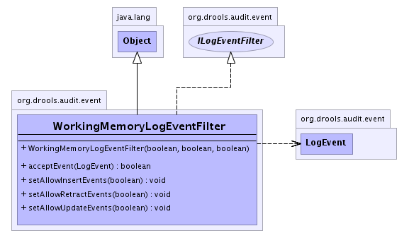

org.drools.audit.event
Class WorkingMemoryLogEventFilter
java.lang.Object
 org.drools.audit.event.WorkingMemoryLogEventFilter
org.drools.audit.event.WorkingMemoryLogEventFilter
- All Implemented Interfaces:
- ILogEventFilter
public class WorkingMemoryLogEventFilter
- extends java.lang.Object
- implements ILogEventFilter
An event filter that can be used to filter working memory events.
By default, all events are allowed. You can filter out any of the
three types of working memory events by setting the allow boolean
for that type to false.
-
- 
| Methods inherited from class java.lang.Object |
clone, equals, finalize, getClass, hashCode, notify, notifyAll, toString, wait, wait, wait |
WorkingMemoryLogEventFilter
public WorkingMemoryLogEventFilter(boolean allowAssertEvents,
boolean allowModifyEvents,
boolean allowRetractEvents)
acceptEvent
public boolean acceptEvent(LogEvent event)
- Description copied from interface:
ILogEventFilter
- Returns whether the given event should be filtered from the event log or not.
- Specified by:
acceptEvent in interface ILogEventFilter
- Parameters:
event - The log event
- Returns:
- Whether the event should be filtered from the event log or not.
- See Also:
ILogEventFilter
setAllowInsertEvents
public void setAllowInsertEvents(boolean allowInsertEvents)
setAllowUpdateEvents
public void setAllowUpdateEvents(boolean allowUpdateEvents)
setAllowRetractEvents
public void setAllowRetractEvents(boolean allowRetractEvents)